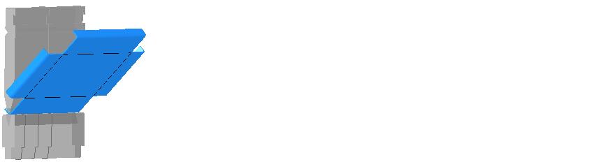

V tomto dialogu jsou specifikovány možnosti pro výběr nástrojů a vytvoření pořadí ohýbání. Příslušnými nastaveními se dosáhne optimálního výpočtu pořadí ohýbání.
Tlačítkem Uložit jako standard se standardně použijí nastavení s funkcí Automaticky na aktuálním dílci.
Tip: Nastavení mohou být na ohýbaném dílci použita po kliknutí na funkci Automaticky.
Nastavení
Tato možnost brání kontaktu ramen jednoho dílce. Tato možnost by měla být použita jen ve zvláštních případech, protože se výrazně omezí možná pořadí ohýbání nebo dokonce není umožněno pořadí ohýbání.
Tip: Budou-li ramena ohnuta k sobě, může se stát, že se budou dotýkat hranou. Je-li aktivní tato možnost, zobrazí se hlášení kolize, ačkoli mohl být ohyb bezproblémově proveden. K zamezení toho musíte deaktivovat tuto možnost.
Tato možnost otočí horní nástroj v uchycení o 180°, jestliže se standardním umístěním nástroje nemůže být pod možností Maximální počet pořadí ohýbání nalezen uvedený počet pořadí ohýbání.
Tuto možnost můžete aktivovat ke schválení horních nástrojů s jinými poloměry ohybu. Nemůže-li být použit nástroj se stejným poloměrem ohybu, bude vyhledáván nástroj s nejbližším menším nebo větším poloměrem ohybu.
NOTE: U změněné hodnoty zkrácení se nepřizpůsobí geometrie dílce. Změna zkrácení má proto za následek změnu délky ramena dílce.
Info: Tuto možnost lze vybrat jen tehdy, jestliže je aktivní možnost Automaticky zvolit horní nástroj.
Tato možnost určuje pořadí ohýbání na základě lepší pozice zadních dorazů.
Info: Tuto možnost lze zvolit jen tehdy, když je u možnosti Maximální počet pořadí ohýbání zadán počet >1.
S touto možností se uvede maximální počet hledaných řešení pro pořadí ohýbání dílců. Po dosažení počtu se nejlepší řešení přiřadí k dílci jako pořadí ohýbání.
Info: U složitých ohýbaných dílců může zvýšení počtu vést k výrazně delší době výpočtu.
Attention! Tuto funkci použijte jen v rozsahu tenkého plechu do asi 2 mm. U silnějších plechů a větších tolerančních hodnot může být nástroj nebo ohýbací stroj poškozen příliš vysokými silami při kolizi s ohýbaným dílcem.
Pokud může být ohyb proveden jen s nepatrným kontaktem s horním nebo spodním nástrojem, musí být do pole možností zadána toleranční hodnota v úhlovém stupni. Maximálně může být zadána toleranční hodnota 15°. Při kontrole úhlů se tato toleranční hodnota připočítá k požadované hodnotě úhlu ohybu. V rámci této hodnoty nebude vydáno žádné hlášení o kolizi.
NOTE: Deformace materiálu při kolizi s horním nebo spodním nástrojem musí zůstat v rámci elastického rozmezí materiálu. Jinak dojde k trvalé deformaci materiálu!
Fig.: Elastická deformace při ohýbání

Legenda:
| A | Elastická deformační zóna |
| α | Maximální úhel ohybu bez kolize |
| β | Toleranční hodnota |
Kritéria
Tato možnost umístí těžiště dílce pro pořadí ohýbání před nebo za ohýbací nástroj.
Těžiště vpředu: U velmi dlouhých ramen musí být respektována vysoká úhlová rychlost během ohýbání.
Těžiště vzadu: U velmi dlouhých ramen musí být respektováno, že ohýbaný dílec doléhá na dorazový prst, aby bylo zabráněno prohnutí ramen.
Fig.: Těžiště dílce před ohýbacím nástrojem

Tato možnost specifikuje, zda mají být nejdříve tendenčně ohnuta krátká nebo dlouhá ramena jednoho dílce.
Fig.: Krátká délka ohybu jako první

Tato možnost určuje, který ohyb bude tendenčně v souvislosti se vzdáleností od středu dílce nejdříve proveden.
Fig.: Další od středu dílce nejdříve

Nastavení silně ovlivní, jak se zohlední kritérium pro výpočty pořadí ohýbání. Čím výše je kritérium umístěno, tím více je zohledněno. Tlačítky se šipkami můžete posunout kritéria s pořadím jejich důležitosti.
Info: Kritéria odpovídají příslušným možnostem a nastaveným vlastnostem. Manipulace s plechem způsobí, že může být dílec optimálně ohnut.
Nejdříve se zpracují všechny procesy prvního řezu. Pořadí ohýbání Jako pořadí ohýbání se označí zpracování všech ohýbaných hran jednoho dílce v určeném pořadí. Ohýbaný dílec může být většinou ohnut v rámci několika pořadí ohýbání. Při automatickém dosazení pořadí ohýbání program stanoví nejoptimálnější pořadí ohýbání a přiřadí jej k ohýbanému dílci. tím u numerického programování přesně odpovídá pořadí programování.